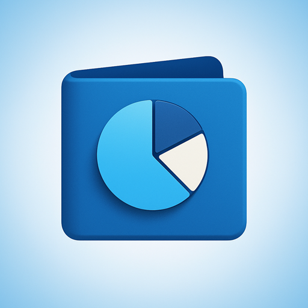

Apps, die deine Daten für sich behalten.
jodabytes ist ein unabhängiger Android-Entwickler aus Berlin. Im Mittelpunkt stehen Apps, die sparsam mit deinen Daten umgehen.
Potte — Haushaltsbuch für Android

Potte ist ein Haushaltsbuch, das zwei Dinge bewusst anders macht: Deine Daten bleiben zu 100 % auf deinem Gerät, und Kategorien lassen sich beliebig tief verschachteln. Dazu: Gemeinschaftsausgaben für WG und Urlaub mit automatischer Endabrechnung.
Weitere Apps sind in Arbeit — sie erscheinen hier, sobald sie fertig sind.
Wofür jodabytes steht
Offline-first
Daten bleiben, wo immer möglich, lokal auf deinem Gerät. Potte kommt komplett ohne Konto, Cloud und Server aus.
Datensparsamkeit
Keine Datensammelei um ihrer selbst willen: Potte enthält weder Tracking noch Analyse-Dienste noch Werbung — und fordert nicht einmal die Internet-Berechtigung an.
Offen und nachprüfbar
Die verwendeten Open-Source-Bibliotheken lassen sich direkt in der App einsehen.